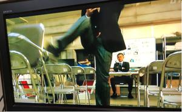

うるがいの話 ある日
最新: 映画『マスカレード・ホテル』うるがいとは 前提知識です
カニの画像をクリックすると『うるがいの話』サイトを表示します|
|
うるがい(ｳﾙｶﾞｲ urugai)とは、『もずくがに』の名前でとても大きくなります。 |
|---|---|
|
|
たながー（ﾀﾅｶﾞｰtanagaa）とは手長えびのことで、何種類かあり大きいのは車 エビぐらいになります。 |

|
ぶながー(bunagaa)とは、赤い髪の毛、赤い身体、そして身長は１ｍ２０ｃｍ ぐらい、川の蟹を食べているの目撃された。場所は沖縄県国頭郡大宜味村のと ある村僕の隣近所に住んでいる爺さんから、聞いた話です。 |
|
|
ギーマ(giima)とは、山原の里山に咲くスズランに似た、 花を付けます。実は食べられます、 気が付くと口の周りが紫になっています。 |
2021年09月29日 (水）映画『マスカレード・ホテル』
15:07

係長、あしたの式の警備 俺も参加させて下さい。
その必要はない
なぜです？
フロントクラークなんだから 当然だろう。
ちょっと待ってください。黙ってみろってことですか？
新田！ お前には お前の仕事があるだろう。
おなじことを なんども言わせるな！
＜＜引き揚げる新田（木村拓哉）は、椅子を蹴る＞＞
こら 新田！
きっと やけを起こして 何か蹴り上げますよ フッ。
あるとき、自称温厚なフルゲ課長が、キュウ係員を別室に連れ込みドアを閉め
た。暫く、するとドーンを大きな音がした。そして、真っ赤な顔したキュウ係
員が部屋の扉をこじ開け、大部屋から足早に去って行った。ほとぼりが冷めた
あるとき、キュウ係員がいない酒の席で課長は、「彼は短気で、あの時注意し
たら壁を蹴った」と語った。この後、現場を確認すると確かに壁が、わずかに
凹んだ跡があった。友達が「風の時代」の到来を感じると言っていた、いずれ
にしろ現役は大変である、そして私もそろそろと準備を考える。